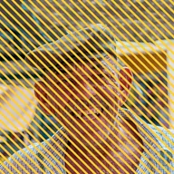

دھاریاں

لیئر کے غیر شفاف حصوں پر دھاریوں کا پیٹرن بناتا ہے، یا دھاریوں کو اس میں سے کاٹ دیتا ہے۔
سیٹنگز
| سیٹنگ | قسم | رینج | ڈیفالٹ |
|---|---|---|---|
| تعداد | نمبر | 0.5 سے 200 تک | 10 |
| چوڑائی | نمبر | 0 سے 1 تک | 0.5 |
| اینگل | زاویہ | -3600° سے 3600° تک | 45° |
| فیز | نمبر | -1000 سے 1000 تک | 0 |
| رنگ | رنگ | – | #2D1EF6 |
| کاٹ دیں | آن یا آف | – | آف |
| ہمواری | نمبر | 0 سے 0.5 تک | 0.01 |
| اسکرین اسپیس | آن یا آف | – | آف |